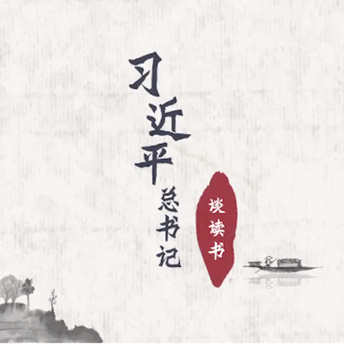
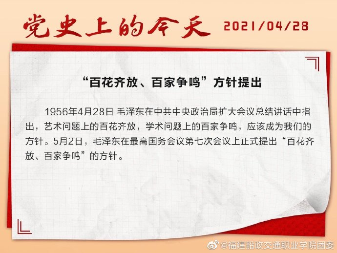

青年大学习 · 一起学党史
一切为了新中国，一切为了人民
抗日战争胜利后，中国共产党代表中国人民的根本利益，为争取和平民主作出了巨大的努力。毛泽东亲自带队，赴重庆与蒋介石谈判，签署了避免内战、实行宪政、实现政治民主化的《双十协定》。然而，1946年底，在美帝国主义的支持下，国民党反动派背叛承诺，悍然对解放区发动全面进攻。中国共产党领导解放区军民英勇地进行自卫，拉开了解放战争的序幕。重庆谈判经历了哪些波折？小米加步枪又是怎样战胜了飞机加大炮？
习近平总书记谈读书
1972年，联合国教科文组织向全世界发出“走向阅读社会”的召唤，并于1995年宣布4月23日为“世界读书日”，至今已经走过了二十六个年头。 近年来，习近平总书记在多个场合强调读书的重要性，倡导全社会要加强读书学习，“把学习作为一种追求、一种爱好、一种健康的生活方式，做到好学乐学”。

点击视频，一起来看习近平总书记谈读书。
#我是党史领学人#
1956年4月28日，毛泽东在中共中央政治局扩大会议总结讲话中指出，艺术问题上的百花齐放，学术问题上的百家争鸣，应该成为我们的方针。
